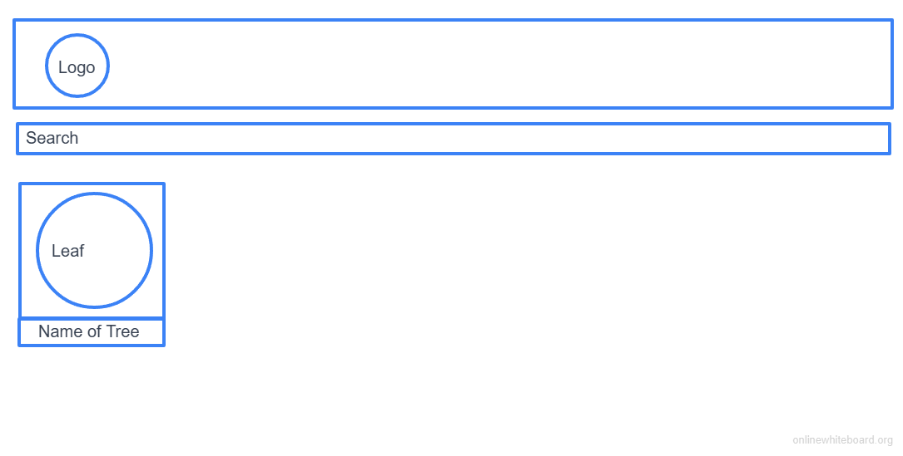
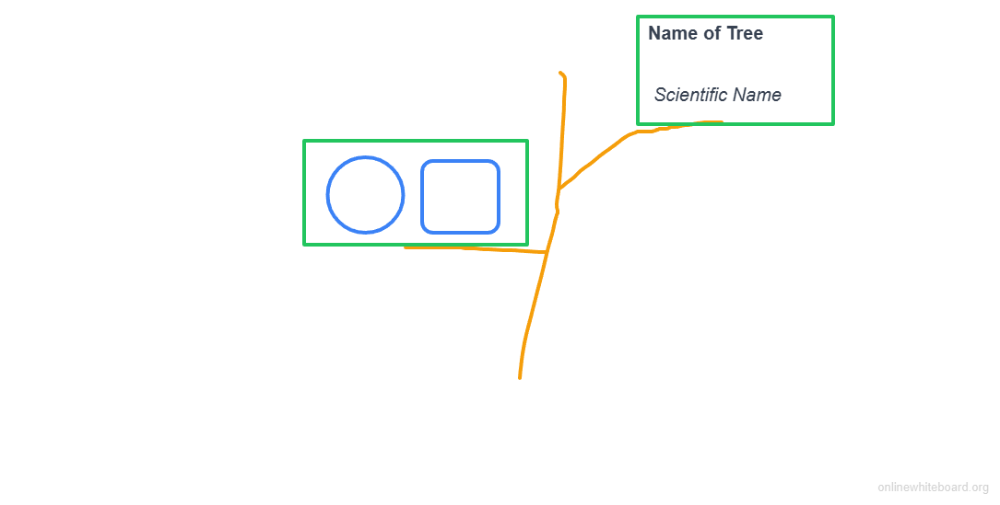

Overview
Purpose
To make it easier to identify trees. This website will show leaf shape/color and bark pattern/color.
Audience
People who take a lot of walks and would like to identify trees that they see.
Dynamic elements
There will be a search bar for selecting trees, a display that changes based on what you search (containing leaf shape and other at a glance info), and a background tree that will update based on your choice.
Branding
Website Logo
Style Guide
Color Palette
Palette URL: https://coolors.co/0c1618-004643-a43312-7ea16b-ada8b6| Primary | Secondary | Accent 1 | Accent 2 |
|---|---|---|---|
| [#0C1618] | [#004643] | [#A43312] | [#7EA16B] |
Pseudocode for your project
This site will display a list of trees with their leaves as well as a search bar for narrowing down your search. -The landing page will display: name, scientific name and the averge leaf shape for one of the trees/and a search bar Once a tree is selected, a modal will display more facts about the tree as well as have a facsimile of the full tree. -The modal will display the details of the tree including name, scientific name, the averge leaf shape, the average height and bark texture for the tree
Wireframes
Create wireframes for your project page(s). One for each page and list them here.
Landing page
There will be (based on the search) more trees in a row under the search bar.

[Page 2 if needed]
There will be more branches for more information. This may be a modal that comes up when you select a tree from page 1.
